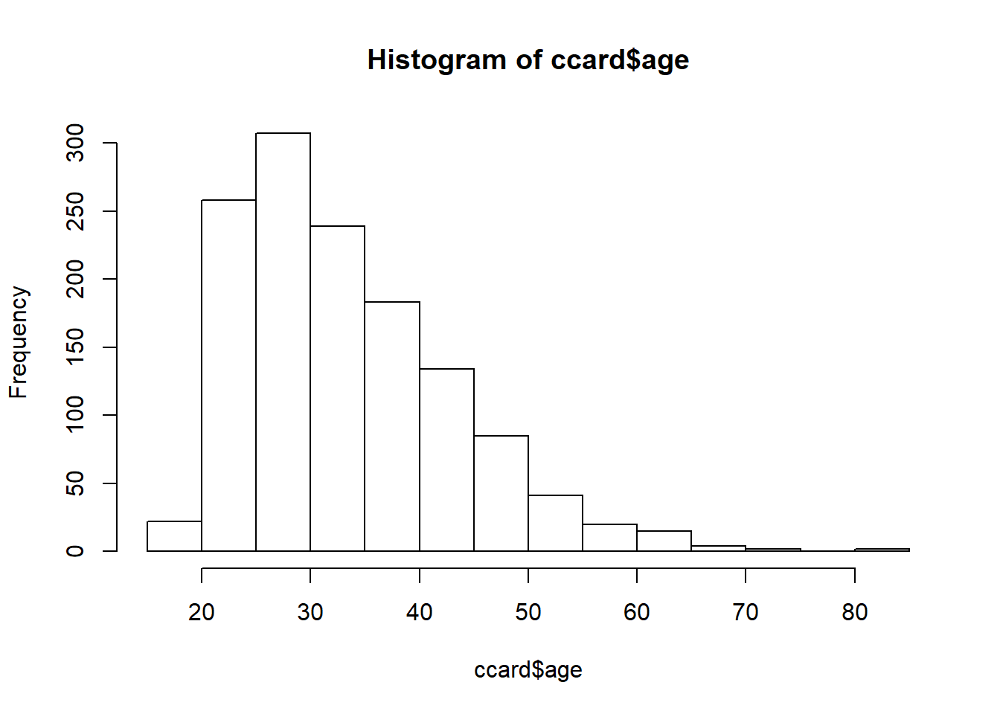
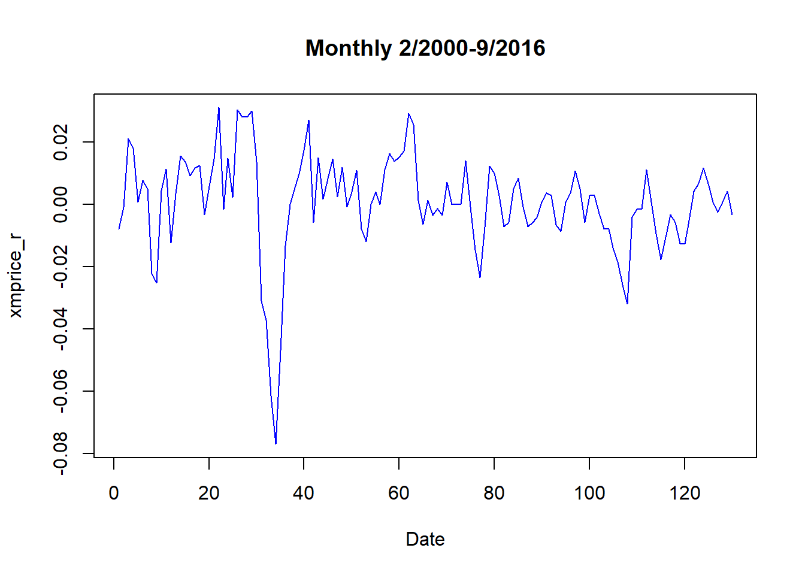
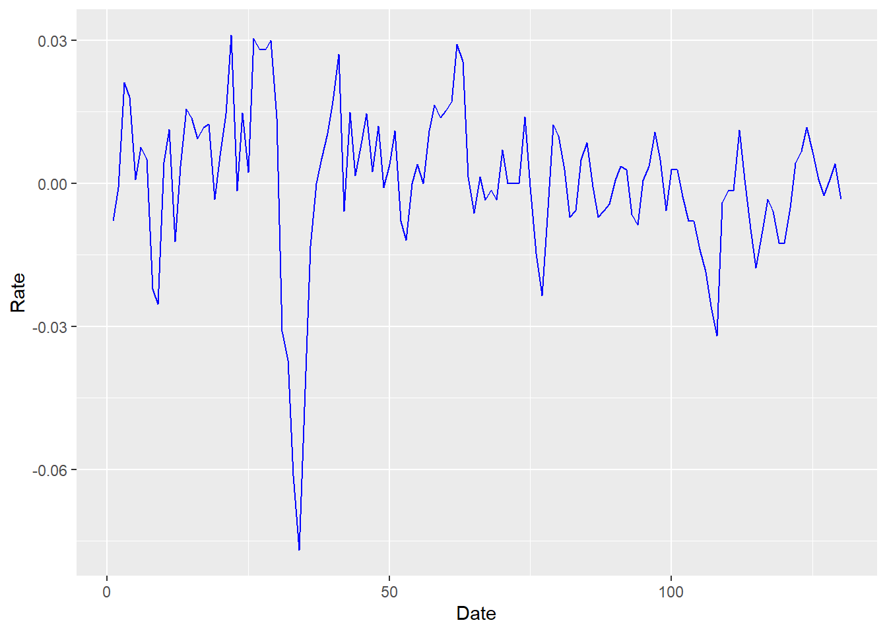
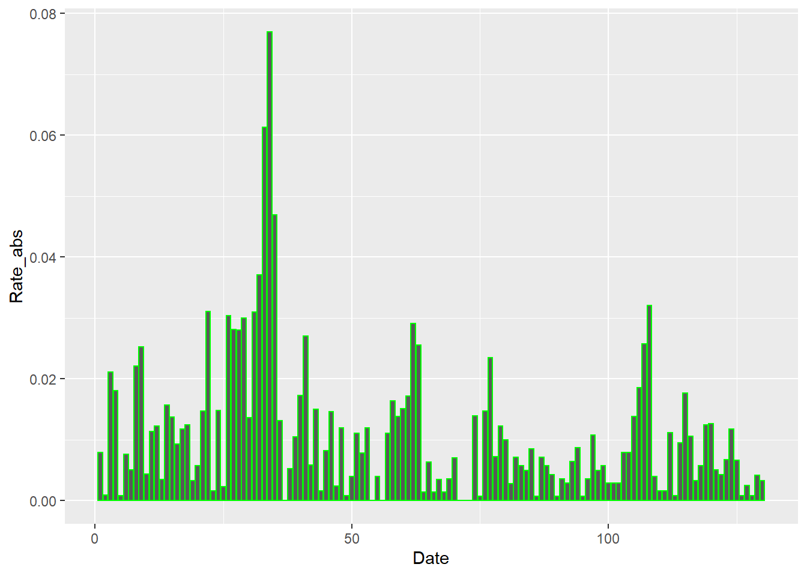
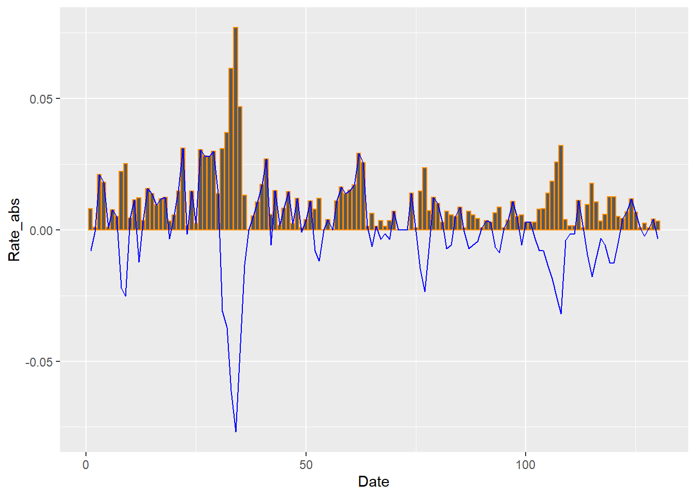
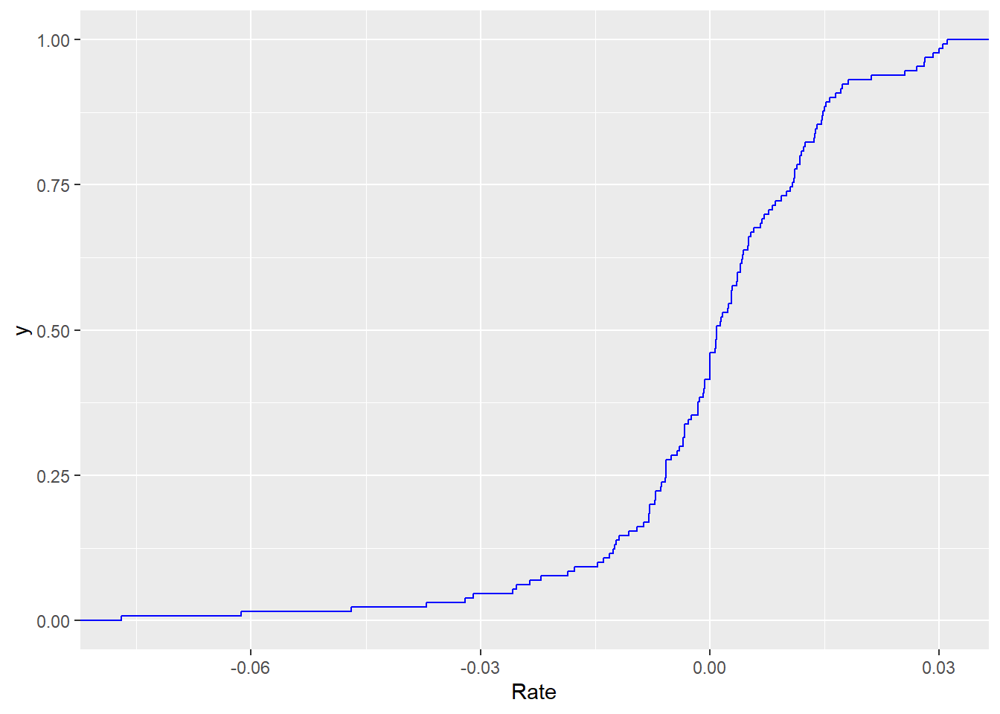
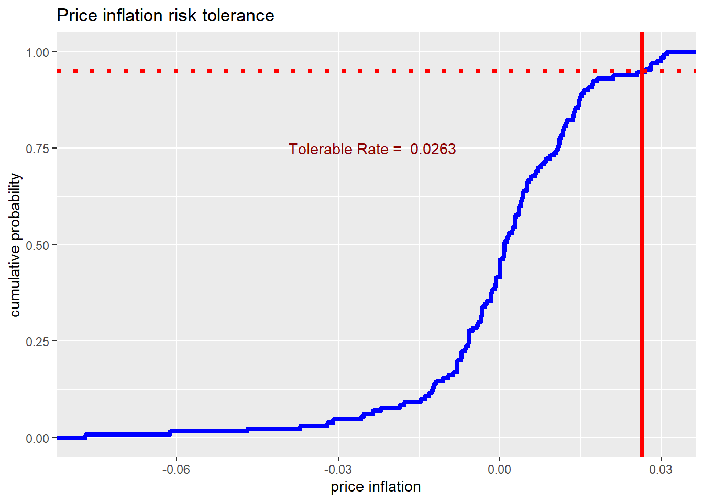
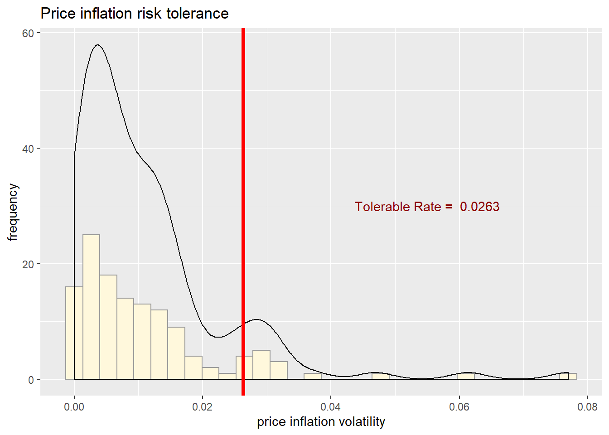
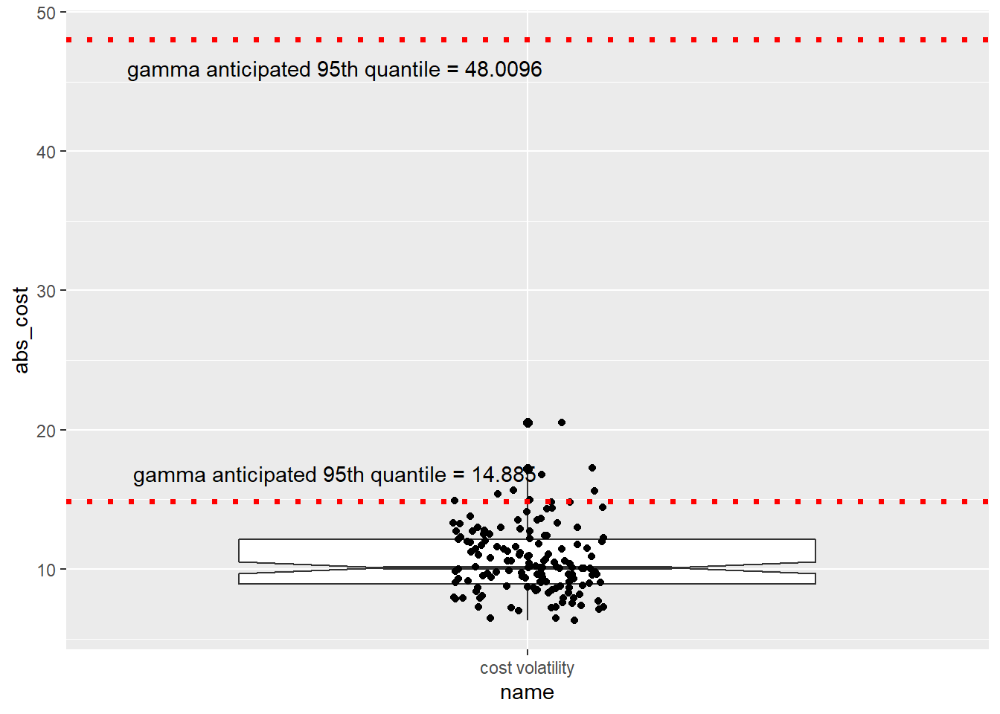

Chapter 3 R Data Modeling
3.1 Imagine This
Your project team is assigned to work with the accounts receivable team. Specifically, accounts receivable is about to review a portfolio of customers from a potential acquisition. Managers would like to query data provided through due diligence during the acquisition process. Some of the questions include:
- What is the income risk across applicant pools?
- Are there differences in applicant income?
- Does age matter?
- Is there a pattern of family dependents across applicant pools?
- How much income per dependent?
The analytics team will process the data, review its quality, and help accounts receivable answer these questions.
In this chapter we will build approaches to manage such queries, including pivot tables, lookups, and the creation of new metrics from existing data. We will expand this assortment of skills into the writing of functions, such as net present value and internal rate of return, more plotting of data, working with time series data, and fitting data to probability distributions.
3.2 Pivot tables and Vertical Lookups
These are, mythically at least, two of the most-used Excel features. Pivot tables are the slice and dice machine we use to partition data sets. Lookups allow us to relate one data table to another. We will explore these tools in R, here made easier and less apt to crash on large data sets. We start with some definitions.
3.2.1 Some definitions
The pivot table is a data summarization tool that can automatically sort, count, total, or give the average of the data stored in one table or spreadsheet, displaying the results in a second table showing the summarized data. This tool transforms a flat table of fields with rows of data into a table with grouped row values and column header values. The specification of grouped row values and column headers can rotate the flat table’s data rows into the intersection of the row and column labels.
“V” or “vertical” stands for the looking up of a value in a column. This feature allows the analyst to find approximate and exact matches between the look up value and a table value in a vertical column assigned to the look up value. A HLOOKUP function does the same lookup but for a specified row instead of a column.
3.2.2 Pivot and Parry
Let’s return to the Credit Card Applicant business questions:
- What is the income risk across applicant pools?
- Are there differences in applicant income?
- Does age matter?
- Is there a pattern of dependents across applicant pools?
- How much income per dependent?
The first step in building an analysis of the data relative to these questions is to understand the required dimensions of the data that apply to the questions. Here we would scan the table column names in the data base and look for
- Card status
- Ownership
- Employment
## 'data.frame': 1319 obs. of 13 variables:
## $ card : Factor w/ 2 levels "no","yes": 2 2 2 2 2 2 2 2 2 2 ...
## $ reports : int 0 0 0 0 0 0 0 0 0 0 ...
## $ age : num 37.7 33.2 33.7 30.5 32.2 ...
## $ income : num 4.52 2.42 4.5 2.54 9.79 ...
## $ share : num 0.03327 0.00522 0.00416 0.06521 0.06705 ...
## $ expenditure: num 124.98 9.85 15 137.87 546.5 ...
## $ owner : Factor w/ 2 levels "no","yes": 2 1 2 1 2 1 1 2 2 1 ...
## $ selfemp : Factor w/ 2 levels "no","yes": 1 1 1 1 1 1 1 1 1 1 ...
## $ dependents : int 3 3 4 0 2 0 2 0 0 0 ...
## $ months : int 54 34 58 25 64 54 7 77 97 65 ...
## $ majorcards : int 1 1 1 1 1 1 1 1 1 1 ...
## $ active : int 12 13 5 7 5 1 5 3 6 18 ...
## $ state : Factor w/ 3 levels "CT","NJ","NY": 3 3 3 3 3 3 3 3 3 3 ...The str() function allows us to see all of the objects in CreditCard. Next lext look at the data itself inside this object using head (for the beginning of the data).
## card reports age income share expenditure owner selfemp dependents
## 1 yes 0 37.7 4.52 0.03327 124.98 yes no 3
## 2 yes 0 33.2 2.42 0.00522 9.85 no no 3
## 3 yes 0 33.7 4.50 0.00416 15.00 yes no 4
## months majorcards active state
## 1 54 1 12 NY
## 2 34 1 13 NY
## 3 58 1 5 NYKnowing the structure and a sample of the data, we can build a summary of the data and review the minimum, maximum, and quartiles in each of CreditCard’s columns of data.
## card reports age income share
## no : 296 Min. : 0.00 Min. : 0.2 Min. : 0.21 Min. :0.000
## yes:1023 1st Qu.: 0.00 1st Qu.:25.4 1st Qu.: 2.24 1st Qu.:0.002
## Median : 0.00 Median :31.2 Median : 2.90 Median :0.039
## Mean : 0.46 Mean :33.2 Mean : 3.37 Mean :0.069
## 3rd Qu.: 0.00 3rd Qu.:39.4 3rd Qu.: 4.00 3rd Qu.:0.094
## Max. :14.00 Max. :83.5 Max. :13.50 Max. :0.906
## expenditure owner selfemp dependents months
## Min. : 0 no :738 no :1228 Min. :0.00 Min. : 0
## 1st Qu.: 5 yes:581 yes: 91 1st Qu.:0.00 1st Qu.: 12
## Median : 101 Median :1.00 Median : 30
## Mean : 185 Mean :0.99 Mean : 55
## 3rd Qu.: 249 3rd Qu.:2.00 3rd Qu.: 72
## Max. :3100 Max. :6.00 Max. :540
## majorcards active state
## Min. :0.000 Min. : 0 CT:442
## 1st Qu.:1.000 1st Qu.: 2 NJ:472
## Median :1.000 Median : 6 NY:405
## Mean :0.817 Mean : 7
## 3rd Qu.:1.000 3rd Qu.:11
## Max. :1.000 Max. :46We immediately see an age minimum of 0.2. Either this is an anomaly, or outright error, or there is an application not quite a year old!. Let’s filter the data for ages greater than 18 to be safe.
In the filter, the comma means keep data on applicants only at or in excess of 18 years of age. When we leave the column empty, it means apply this filter across all columns. We next review the distribution of ages of applicants to be sure our filter does the job properly. The function hist() builds a simple frequency histogram to visualize this data.

3.2.3 Try this exercise
What is the basic design of this inquiry?
- Business questions?
- Dimensions?
- Taxonomy and metrics?
To answer 1 and 2 we have business questions along the lines of indicator variables:
- Card issued (
card) - Own or rent (
owner) - Self-employed or not (
selfemp)
For 3 our basic taxonomy is:
- For each card issued…in New York
- …and for each owner…
- …who is employed…
- What are the range of income, average dependents, age, and income per dependent?
Here is the basic 3 step pivot table design. We should check if we have installed the dplyr package into the R environment.
# install.packages("dplyr") if not already
library(dplyr)
# set decimal places and turn off scientific notation
options(digits = 4, scipen = 99999999)
## 1: filter to keep three states.
pivot_table <- filter(ccard, state %in% "NY")
## 2: set up data frame for by-group processing.
pivot_table <- group_by(pivot_table, card, owner, selfemp)
## 3: calculate the three summary metrics
options(dplyr.width = Inf) ## to display all columns
pivot_table <- summarise(pivot_table, income.cv = sd(income)/mean(income), age.avg = mean(age), income.per.dependent = sum(income)/sum(dependents))We then visualize results in a table. Here we use knitr, which is a package that powers rmarkdown. The function kable() is short for “knitr table.”
| card | owner | selfemp | income.cv | age.avg | income.per.dependent |
|---|---|---|---|---|---|
| no | no | no | 0.4942 | 31.92 | 3.646 |
| no | no | yes | 0.5653 | 26.39 | 2.852 |
| no | yes | no | 0.3756 | 36.02 | 2.158 |
| no | yes | yes | NA | 53.33 | Inf |
| yes | no | no | 0.3299 | 28.09 | 5.314 |
| yes | no | yes | 0.4368 | 37.45 | 7.062 |
| yes | yes | no | 0.5520 | 36.80 | 3.155 |
| yes | yes | yes | 0.5032 | 41.92 | 3.195 |
3.2.4 Now to VLOOKUP
Let’s start with a different data set. We load this IBRD (World Bank) data that has
- The variable
life.expectancyis the average life expectancy for each country from 2009 through 2014. - The variable
sanitationis the percentage of population with direct access to sanitation facilities.
le <- read.csv("data/life_expectancy.csv", header = TRUE, stringsAsFactors = FALSE)
sa <- read.csv("data/sanitation_.csv", header = TRUE, stringsAsFactors = FALSE)Always we look at the first few records.
## country years.life.expectancy.avg
## 1 Afghanistan 46.62
## 2 Albania 71.12
## 3 Algeria 61.82
## 4 Angola 41.66
## 5 Antigua and Barbuda 69.81
## 6 Arab World 60.93## country sanitation.avg
## 1 Afghanistan 25.40
## 2 Albania 85.36
## 3 Algeria 84.22
## 4 American Samoa 61.73
## 5 Andorra 100.00
## 6 Angola 36.01The job here is to join sanitation data with life expectancy data, by country. In Excel we would typically use a VLOOKUP(country, sanitation, 2, FALSE) statement.
- In this statement
countryis the value to be looked up, for example, “Australia”. - The variable
sanitationis the range of the sanitation lookup table of two columns of country and sanitation data, for example,B2:C104in Excel. - The
2is the second column of the sanitation lookup table, for example columnC. FALSEmeans don’t find an exact match.
In R we can use the merge() function.
The whole range of countries is populated by the lookup.
## country years.life.expectancy.avg sanitation.avg
## 1 Afghanistan 46.62 25.40
## 2 Albania 71.12 85.36
## 3 Algeria 61.82 84.223.2.5 Try this exercise
We will load yet another data set on house prices. Suppose we work for a housing developer like Toll Brothers (NYSE: TOL) and want to allocate resources to marketing and financing the building of luxury homes in major US metropolitan areas. We have data for one test market.
Let’s look at the available data:
## ID Price SqFt Bedrooms
## Min. : 1.0 Min. : 69100 Min. :1450 Min. :2.00
## 1st Qu.: 32.8 1st Qu.:111325 1st Qu.:1880 1st Qu.:3.00
## Median : 64.5 Median :125950 Median :2000 Median :3.00
## Mean : 64.5 Mean :130427 Mean :2001 Mean :3.02
## 3rd Qu.: 96.2 3rd Qu.:148250 3rd Qu.:2140 3rd Qu.:3.00
## Max. :128.0 Max. :211200 Max. :2590 Max. :5.00
## Bathrooms Offers Brick Neighborhood
## Min. :2.00 Min. :1.00 No :86 East :45
## 1st Qu.:2.00 1st Qu.:2.00 Yes:42 North:44
## Median :2.00 Median :3.00 West :39
## Mean :2.44 Mean :2.58
## 3rd Qu.:3.00 3rd Qu.:3.00
## Max. :4.00 Max. :6.00Our business questions include:
- What are the most valuable (higher price) neighborhoods?
- What housing characteristics maintain the most housing value?
First, where and what are the most valuable houses? One way to answer this is to build a pivot table. Next we pivot the data and build metrics into the query. We will use the mean() and standard deviation sd() functions to help answer our questions.
#library(dplyr)
## 1: filter to those houses with fairly high prices
pivot_table <- filter(hprice, Price > 99999)
## 2: set up data frame for by-group processing
pivot_table <- group_by(pivot_table, Brick, Neighborhood)
## 3: calculate the summary metrics
options(dplyr.width = Inf) ## to display all columns
pivot_table <- summarise(pivot_table, Price_avg = mean(Price), Price_cv = sd(Price)/mean(Price), SqFt_avg = mean(SqFt), Price.per_SqFt = mean(Price)/mean(SqFt))Then we visualize in a table.
| Brick | Neighborhood | Price_avg | Price_cv | SqFt_avg | Price.per_SqFt |
|---|---|---|---|---|---|
| No | East | 121096 | 0.1252 | 2020 | 59.96 |
| No | North | 115307 | 0.0940 | 1958 | 58.88 |
| No | West | 148230 | 0.0912 | 2073 | 71.49 |
| Yes | East | 135468 | 0.0978 | 2031 | 66.70 |
| Yes | North | 118457 | 0.1308 | 1857 | 63.78 |
| Yes | West | 175200 | 0.0930 | 2091 | 83.78 |
Based on this data set from one metropolitan area, the most valuable properties (fetching the highest average price and price per square foot) are made of brick in the West neighborhood. Brick or not, the West neighborhood also seems have the lowest relative variation in price.
Now for something different: functions.
3.3 Why Functions?
We will encapsulate several operations into a reusable storage device called a function. The usual suspects and candidates for the use of functions are:
- Data structures rack together related values into one object.
- Functions group related commands into one object.
In both cases the logic and coding is easier to understand, easier to work with, easier to build into larger things, and less prone to breaches of plain-old stubby finger breaches of operational safety and security.
For example, here is an Excel look-alike NPV function. We enter this into a code-chunk in an R markdown file or directly into the console to store the function into the current R environment. Once that is done, we now have a new function we can use like any other function.
## Net Present Value function
## Inputs: vector of rates (rates) with 0 as the first rate for time 0, vector of cash flows (cashflows)
## Outputs: scalar net present value
NPV_1 <- function(rates, cashflows) {
NPV <- sum(cashflows/(1 + rates)^(seq_along(cashflows)-1))
return(NPV)
}The structure of a function includes:
- A header describes the function along with inputs and outputs. Here we use comment characters
#to describe and document the function. - A definition names the function and identify the interface of inputs and outputs to the programming environment. The name is like a variable and is assigned to
function(), where inputs are defined. - Code statements take the inputs from the definition and program the tasks, logic, and decisions in the function’s work flow into output.
- An output statement releases the function’s results for use in other code statements outside of the function’s “mini-verse.” We use the formal
return()function to identify the output that the function will produce. If we did not usereturn(), thenRwill us the last assigned variable as the output of the function.
In this example We generate data internal to the function:
- We use
seq_alongto generate time index of cashflows. - We must subtract 1 from this sequence as starting cashflow is time 0.
- We generate a net present value directly in one line of code.
Our functions get used just like the built-in ones, for example, mean(). Let’s define rates and cashflows as vector inputs to the NPV.1() function and run this code. The interpretation of rates here is the per period rate a cash flow can grow to in so many periods. A rate of 0.04 assigned to the third period means that a unit of currency today can grow into $(1 + 0.04)(1 + 0.04)(1 + 0.04)=(1 + 0.04)^3=1.1249 units of currency in three periods. With this interpretation we calculate the net present value of cash flows next.
rates <- c(0.00, 0.08, 0.06, 0.04) ## first rate is always 0.00
cashflows <- c(-100, 200, 300, 10)
NPV_1(rates, cashflows)## [1] 361.1We go back to the declaration and look at the parts:
## Net Present Value function
## Inputs: vector of rates (rates) with 0 as the first rate for time 0, vector of cash flows (cashflows)
## Outputs: scalar net present value
NPV_1 <- function(rates, cashflows) {
NPV <- sum(cashflows/(1 + rates)^(seq_along(cashflows)-1))
return(NPV)
}Interfaces refer to these components:
- inputs or arguments
- outputs or return value
- Calls other functions
sum,seq_along(), operators/,+,^and-.
We can also call other functions we’ve written. We use return() to explicitly say what the output is. This is simply good documentation. Alternately, a function will return the last evaluation.
Comments, that is, lines that begin with #, are not required by R, but are always a good and welcome idea that provide a terse description of purpose and direction. Initial comments should also include a listing of inputs, also called “arguments,” and outputs.
3.3.1 What should be a function?
Functions should be written for code we are going to re-run, especially if it will be re-run with changes in inputs. They can also be code chunks we keep highlighting and hitting return on. We often write functions for code chunkswhich are small parts of bigger analyses.
In the next redition of irr.1 we improve the code with named and default arguments.
## Internal Rate of Return (IRR) function
## Inputs: vector of cash flows (cashflows), scalar interations (maxiter)
## Outputs: scalar net present value
IRR_1 <- function(cashflows, maxiter=1000) {
t <- seq_along(cashflows)-1
## rate will eventually converge to IRR
f <- function(rate)(sum(cashflows/(1+rate)^t))
## use uniroot function to solve for root (IRR = rate) of f = 0
## c(-1,1) bounds solution for only positive or negative rates
## select the root estimate
return(uniroot(f, c(-1,1), maxiter = maxiter)$root)
}Here the default argument is maxiter which controls the number of iterations. At our peril we can eliminate this argument if we want. This illustrates yet another need for functions: we can put error and exception logic to handle somtimes fatal issues our calculations might present. Thw uniroot() function also bounds the roots between -1 and 1 using the concatenate function c(-1,1).
Here are the cashflows for a 3% coupon bond bought at a hefty premium.
## [1] -0.02554## [1] -0.02554We get a negative IRR or yield to maturity on this net present value = 0 calculation. A not so trivial interpretation of negative yields, and even negative prices is the existence of over-supply of a good or service.
3.3.2 Shooting trouble
Problem: We see “odd”" behavior when arguments aren’t as we expect.
## [1] 86.1We do get a result, but…
- What does it mean?
- What rates correspond with what cashflows?
Here the function calculates a net present value. But the analyst entered two rates for four cash flows.
Solution: We put sanity checks into the code.
- Let’s use the
stopifnot(some logical statment)is TRUE.
## Net Present Value function
## Inputs: vector of rates (rates) with 0 as the first rate for time 0, vector of cash flows (cashflows), length of rates must equal length of cashflows
## Outputs: scalar net present value
NPV_2 <- function(rates, cashflows) {
stopifnot(length(rates) == length(cashflows))
NPV <- sum(cashflows/(1 + rates)^(seq_along(cashflows)-1))
return(NPV)
}Here are some thoughts about stopifnot TRUE error handling
- Arguments to
stopifnot()are a series of logical expressions which should all be TRUE. - Execution halts, with error message, at first FALSE.
Hit (not too hard!) the Escape key on your keyboard, This will take you out of Browse[1]> mode and back to the console prompt >.
3.3.3 What the function can see and do
Each function has its own environment. Names here will override names in the global environment. The function’s internal environment starts with the named arguments. Assignments inside the function only change the internal environment. If a name is not defined in the function, the function will look for this name in the environment the function gets called from.
3.3.4 Try this …
Your company is running a 100 million pound sterling project in the EU. You must post 25% collateral in a Landesbank using only high-quality government securities. You find a high-quality gilt fund that will pay 1.5% (coupon rate) annually for three years.
Some questions for analysis
- How much would you pay for this collateral if the rate curve (yield to maturity of cash flows) is (from next year on…)
- Suppose a bond dealer asks for 130% of notional collateral value for this bond. What is the yield on this transaction (IRR)? Would you buy it?
- What is the return on this collateral if you terminate the project in one year and liquidate the collateral (i.e., sell it for cash) if the yield shifts down by 0.005? This is a “parallel” shift, which is finance for: “take each rate and deduct 0.005.”
To get at these requirements we will build rates and cash flows across the 3-year time frame, remembering our previous work.
## [1] 0.000 -0.001 0.002 0.010collateral_periods <- 3
collateral_rate <- 0.25
collateral_notional <- collateral_rate * 100
coupon_rate <- 0.015
cashflows <- rep(coupon_rate * collateral_notional, collateral_periods)
cashflows[collateral_periods] <- collateral_notional + cashflows[collateral_periods]
(cashflows <- c(0, cashflows))## [1] 0.000 0.375 0.375 25.375What just happened?
- We appended a
0to the rate schedule so we can use theNPV.2function. - We then parameterized the term sheet (terms of the collateral transaction),
- We used
rep()to form coupon cash flows. - Then we added notional value repayment to the last cash flow.
Now we can calculate the present value of the bond using NPV_2.
## [1] 25.38The answer is 25.378 million pounds sterling or Value_0 / collateral_notional times the notional value.
The yield to maturity averages the forward rates across the bond cash flows. A “forward rate” is the rate per period we would expect to earn each period for a specified number of periods forward. This is one interpretation of the Internal Rate of Return (“IRR”).
cashflows_IRR <- cashflows
collateral_ask <- 130
cashflows_IRR[1] <- -(collateral_ask/100) * collateral_notional
## mind the negative sign!
(collateral_IRR_1 <- IRR_1(cashflows_IRR))## [1] -0.07112You end up paying over 7% per annum for the privilege of owning this bond! You call up the European Central Bank, report this overly hefty haircut on your project. You send out a request for proposal to other bond dealers. They come back with an average asking price of 109 (109% of notional).
cashflows_IRR <- cashflows
collateral_ask <- 109
cashflows_IRR[1] <- -(collateral_ask/100) * collateral_notional
(collateral_IRR_1 <- IRR_1(cashflows_IRR))## [1] -0.01416That’s more like it: about 140 basis points (1.41% x 100 basis points per percentage) cost (negative sign).
Let’s unwind the project, and the collateral transaction, in 1 year. Let’s suppose the yield curve in 1 year has parallel shifted down by 0.005.
rate_shift <- -0.005
rates_1 <- c(0, rates[-2]) + rate_shift
cashflows_1 <- c(0, cashflows[-2])
(Value_1 <- NPV_2(rates_1, cashflows_1))## [1] 25.38## [1] -0.06879This results ooks much more than a break-even return on the collateral transaction:
## [1] -1719807That’s probably some executive’s salary (with stock grants!)…in pounds sterling.
3.3.5 Mind the Interface!
Interfaces mark out a controlled inner environment for our code;
- They allow us to interact with the rest of the system only at the interface.
- Arguments explicitly give the function all the information the function needs to operate and reduces the risk of confusion and error.
- There are exceptions such as true universals like \(\pi\).
- Likewise, output should only be through the return value.
Let’s build (parametric) distributions next.
3.4 Making distributions
As always, let’s load some data, this time from the Bureau of Labor Statistics (BLS) and load the export-import price index whose description and graph are at http://data.bls.gov/timeseries/EIUIR?output_view=pct_1mth. We look up the symbols “EIUIR” and “EIUIR100” and download a text file that we then convert to a comma separated variable or csv file in Excel. We deposit the csv file in a directory and read it into a variable called EIUIR.
## Date Value
## 1 2006-01-01 113.7
## 2 2006-02-01 112.8
## 3 2006-03-01 112.7
## 4 2006-04-01 115.1
## 5 2006-05-01 117.2
## 6 2006-06-01 117.3## 'data.frame': 131 obs. of 2 variables:
## $ Date : Factor w/ 131 levels "2006-01-01","2006-02-01",..: 1 2 3 4 5 6 7 8 9 10 ...
## $ Value: num 114 113 113 115 117 ...We might have to have installed separately the xts and zoo packages that handle time series data explicitly. The str() function indicates that the Value column in the data frame contains the export price series. We then compute the natural logarithm of prices and calculate the differences to get rates of growth from month to month. A simple plot reveals aspects of the data series to explore.
## 1 2 3 4 5 6
## -0.0079471 -0.0008869 0.0210719 0.0180806 0.0008529 0.0076433
We further transform the data exploring the absolute value of price rates. This is a first stab at understanding the clustering of volatility in financial-economic time series, a topic to which we will return.
xmprice_r_df <- data.frame(xmprice_r, Date = index(xmprice_r), Rate = xmprice_r[, 1], Rate_abs = abs(xmprice_r[,1]))
head(xmprice_r_df)## xmprice_r Date Rate Rate_abs
## 1 -0.0079471 1 -0.0079471 0.0079471
## 2 -0.0008869 2 -0.0008869 0.0008869
## 3 0.0210719 3 0.0210719 0.0210719
## 4 0.0180806 4 0.0180806 0.0180806
## 5 0.0008529 5 0.0008529 0.0008529
## 6 0.0076433 6 0.0076433 0.0076433## 'data.frame': 130 obs. of 4 variables:
## $ xmprice_r: num -0.007947 -0.000887 0.021072 0.018081 0.000853 ...
## $ Date : int 1 2 3 4 5 6 7 8 9 10 ...
## $ Rate : num -0.007947 -0.000887 0.021072 0.018081 0.000853 ...
## $ Rate_abs : num 0.007947 0.000887 0.021072 0.018081 0.000853 ...We can achieve a “prettier” plot with the ggplot2 package. In the ggplot statements we use aes, “aesthetics”, to pick x (horizontal) and y (vertical) axes. The added (+) geom_line is the geometrical method that builds the line plot.

Let’s try a bar graph of the absolute value of price rates. We use geom_bar to build this picture.
library(ggplot2)
ggplot(xmprice_r_df, aes(x = Date, y = Rate_abs)) + geom_bar(stat = "identity", colour = "green")
3.4.1 Try this exercise
Let’s overlay returns (geom_line) and their absolute value geom_bar.
ggplotdeclares the canvas using the price data frame.aesestablishes the data series to be used to generate pictures.geom_barbuilds a bar chart.geom_lineoverlays the bar chart with a line chart.
By examining this chart, what business questions about your Univeral Export-Import Ltd supply chain could this help answer? Why is this helpful?
library(ggplot2)
ggplot(xmprice_r_df, aes(Date, Rate_abs)) + geom_bar(stat = "identity", colour = "darkorange") + geom_line(data = xmprice_r_df, aes(Date, Rate), colour = "blue")
The plot goes a long way to answering the question: When supply and demand tightens, does price volatility cluster? Here is an interpretation based on the data we see in the plot.
- If we are selling, we would experience strong swings in demand and thus in revenue at the customer fulfillment end of the chain.
- If we are buying, we would experience strong swings in cost and input product utilization at the procurement end of the chain.
- For the financial implications: we would have a tough time making the earnings we forecast to the market.
3.4.2 Picture this
We import goods as input to our manufacturing process. We might want to know the odds that a very high export-import rate might occur. We can plot a cumulative distribution function (cdf or CDF) call. we can build this plot using the stat_ecdf() function in ggplot2.

3.4.3 Try another exercise
- Suppose the procurement team’s delegation of authority remit states: “Procurement may approve input invoices when there is only a 5% chance that prices will rise any higher than the price rate associated with that tolerance. If input prices do rise higher than the tolerable rate, you must get divisional approval.”
- Plot a vertical line to indicate the maximum tolerable rate for procurement using the BLS EIUR data from 2000 to the present.
- Use
r_tol <- quantile(xmprice_r_df$Rate, 0.95)to find the tolerable rate. - Use
+ geom_vline(xintercept = r_tol)in the CDF plot.
We can implement these requirements with the following code.
#library(ggplot2)
r_tol_pct <- 0.95
r_tol <- quantile(xmprice_r_df$Rate, r_tol_pct)
r_tol_label <- paste("Tolerable Rate = ", round(r_tol, 4))
ggplot(xmprice_r_df, aes(Rate)) +
stat_ecdf(colour = "blue", size = 1.5) +
geom_vline(xintercept = r_tol, colour = "red", size = 1.5) +
geom_hline(yintercept = 0.95, color = "red", size = 1.5, linetype="dotted") +
annotate("text", x = r_tol-.05 , y = 0.75, label = r_tol_label, colour = "darkred") +
xlab("price inflation") + ylab("cumulative probability") +
ggtitle("Price inflation risk tolerance")
This may be a little more than we bargained for originally. We used the paste and round (to two, 2, decimal places) functions to make a label. We made much thicker lines (size = 1.5). At price inflation of 2.6348% we drew a line with the vertical line geom_vline() annotated the line with text, and intersected the cumulative probability plot (stat_ecdf()) with a horizontal dotteed line geom_hline(), labeled the axes, and inserted a title.
How might we interpret this plot?
The y-axis is the cumulative probability that a rate of price inflation on the x-axis occurs.
The risk management policy states that any inflation above an occurrence rate of 95% must be managed. This is the red horizontal dotted line. Recall that this tolerance is for goods and services purchased.
The 95th quantile of the price inflation series is 2.6348%
Now that we have made some distributions out of live data, let’s estimate the parameters of specific distributions that might be fit to that data.
3.5 Optimization
The optimization we will conduct here helps us to find the distribution that best fits the data. We will use results from optimization to simulate that data to help us make decisions prospectively.
There are many distributions in R: ?distributions will tell you all about them.
- If
nameis the name of a distribution (e.g.,normfor “normal”), then
- dname = the probability density (if continuous) or probability mass function of
name(pdf or pmf), think “histogram” - pname = the cumulative probability function (CDF), think “s-curve”
- qname = the quantile function (inverse to CDF), “think tolerance line”
- rname = draw random numbers from
name(first argument always the number of draws), think whatever you want…it’s kind of random
- And ways to write your own (like the
paretodistribution we use in finance)
3.5.1 Try this exercise
Suppose the EIUR price series is the benchmark in several import contracts you write as the procurement officer of your organization. Your concern is with volatility. Thus you think that you need to simulate the size of the price rates, whatever direction they go in. Draw the histogram of the absolute value of price rates.
#library(ggplot2)
r_tol <- quantile(xmprice_r_df$Rate, 0.95)
r_tol_label <- paste("Tolerable Rate = ", round(r_tol, 4))
ggplot(xmprice_r_df, aes(Rate_abs)) +
geom_histogram(fill = "cornsilk", colour = "grey60") +
geom_density() +
geom_vline(xintercept = r_tol, colour = "red", size = 1.5) +
annotate("text", x = .055 , y = 30, label = r_tol_label, colour = "darkred") +
xlab("price inflation volatility") + ylab("frequency") +
ggtitle("Price inflation risk tolerance")
This series is right-skewed and thickly-tailed. We will use this function to pull several of the statistics calculations together.
## r_moments function
## INPUTS: r vector
## OUTPUTS: list of scalars (mean, sd, median, skewness, kurtosis)
data_moments <- function(data){
require(moments)
mean_r <- mean(data)
sd_r <- sd(data)
median_r <- median(data)
skewness_r <- skewness(data)
kurtosis_r <- kurtosis(data)
result <- data.frame(mean = mean_r, std_dev = sd_r, median = median_r, skewness = skewness_r, kurtosis = kurtosis_r)
return(result)
}We will need to install.packages("moments") to make this function operate. We then run these sentences.
| mean | std_dev | median | skewness | kurtosis |
|---|---|---|---|---|
| 0.0109 | 0.0117 | 0.0074 | 2.523 | 12.15 |
As we visually surmised, the series is right-skewed and very thickly tailed. One interrpretation of teh thick tails is that price inflation volatility will beget further volatility. This is what is known as a stylized fact of many markets. For the manager it means that when volatility of purchased goods prices is low, the manager may expect that low volatility will persist until a major and substantive bit of news occurs. When the innovative news occurs then volatility will be pumped up and persist until the news cycle runs its course.
This stylized fact may indicate that the gamma and pareto functions may help us to describe these series and prepare us for simulations, estimation, and inference. Next we will make liberal use of the fitdistr function from MASS and come back to this moments function.
3.6 Estimate until morale improves…
Given data about an important series like export-import price changes, we might want to know how probable changes will occur in the future. We can estimate the parameters of anticipated movements using various probability distributions such as the gamma and pareto distributions. Of particular interest to managers is the simulation of the tail of the series, where the kurtotic thickness presides. Managers might choose to manage volatility in the tails using insurance, contracting, hedging, or even elimination of the problem altogether by, for example, moving facilities to other regions.
We will try one method that works often enough in practice to estimate distributional parameters, the Method of Moments (“MM” or, more affectionately, “MOM”). This technique estimates the distribution parameters such that the moments of the data match the moments of the distribution. Other methods include:
fitdistr: Let the opaque box do the job for you; look at the packageMASSwhich uses the “maximum likelihood” approach in thefitdistrestimating function (likelmfor regression).fitdistrplus: For the more adventurous analyst, this package contains several methods, including MM, to get the job done.
Suppose we believe that absolute price rates somehow follow a gamma distribution. You can look up this distribution easily enough in Wikipedia’s good article on the subject. Behind managerial scenes, we can model potential losses with gamma severity function that allows for skewness and thick tails. We can specify the gamma distribution with shape, \(\alpha\), and scale, \(\beta\), parameters. We will find in operational loss analysis that this distribution is especially useful for time-sensitive losses.
It turns out We can specify the shape and scale parameters using the mean, \(\mu\), and standard deviation, \(\sigma\) of the random severities, \(X\). The scale parameter is
\[ \beta = \sigma^2 / \mu, \]
and shape parameter,
\[ \alpha = \mu^2 / \sigma^2. \]
The distribution itself is defined as
\[ f(x; alpha, \beta) = \frac{\beta^{\alpha}x^{\alpha-1}e^{-x\beta}}{\Gamma(\alpha)}, \]
where, to have a complete statement,
\[ \Gamma(x) = \int_{0}^{\infty} x^{t-1} e^{-x} dx. \]
Let’s finally implement our method into R.
First, we will load a cost sample and calculate moments and gamma parameters:
cost <- read.csv("data/cost.csv")
cost <- abs(cost$x)
cost_moments <- data_moments(cost)
cost_mean <- cost_moments$mean
cost_sd <- cost_moments$std_dev
(cost_shape <- cost_mean^2/cost_sd^2)## [1] 19.07## [1] 0.5576When performing these calculations, be sure to load the function data_moments() and moments library into the workspace.
Second, we can use fitdistr from the Mass package to estimate the gamma parameters alpha and beta.
## shape rate
## 20.300 1.910
## ( 2.373) ( 0.226)Here we get a shape and rate parameter estimation with the standard deviations of these estimates in the parentheses below the estimates.
Third, we construct the ratio of estimates to the standard error of estimates. This computes the number of standard deviations away from zero the estimates are. If they are “far” enough away from zero, we have reason to reject the null hypothesis that the estimates are no different from zero.
## shape rate
## 8.555 8.450| x | |
|---|---|
| shape | 8.555 |
| rate | 8.450 |
Nice…but we also note that the scale parameter is fit_gamma_cost$estimate[2] / gamma_start[2] = 3.4247 times the moment estimates above.
Suppose we believe that the method of moments works better for management decisions about cost. Also we believe that in the next quarter average and standard deviation of costs will follow history. Our risk management policy states that any cost volatility above the 95 quantile must be managed by the executive vice president of manufacturing, well above our pay grade. Using the gamma function how can we simulate this threshold?
We start by loading up the paramters from the absolute value of cost.
cost_moments <- data_moments(cost)
cost_mean <- cost_moments$mean
cost_sd <- cost_moments$std_dev
(cost_shape <- cost_mean^2/cost_sd^2)## [1] 19.07## [1] 0.5576Next we simply calculate the 95th quantile and locate it on a box plot of absolute values of costs.
cost_95 <- qgamma(0.95, cost_shape, cost_scale)
# for comparison to the gamma indicated quantile
cost_95_hist <- quantile(cost, 0.95)
cost_95_label <- paste0("gamma anticipated 95th quantile = ", round(cost_95, 4))
cost_95_hist_label <- paste0("gamma anticipated 95th quantile = ", round(cost_95_hist, 4))
cost_abs_df <- data.frame(abs_cost = cost, name = "cost volatility")
ggplot(cost_abs_df, aes(x = name, y = abs_cost)) +
geom_boxplot(outlier.colour="black", outlier.shape=16, outlier.size=2, notch=TRUE) +
geom_jitter(shape=16, position=position_jitter(0.1)) +
geom_hline(yintercept = cost_95, linetype = "dotted", size = 1.25, color = "red") +
geom_hline(yintercept = cost_95_hist, linetype = "dotted", size = 1.25, color = "red") +
annotate("text", x = 0.75, y = cost_95 - 2, label = cost_95_label) +
annotate("text", x = 0.75, y = cost_95_hist + 2, label = cost_95_hist_label)
The boxplot uses a notch to indicate the confidence interval for the median. The jitter allows us to see the original data on the same plot. But the gamma function exercise seems way off! The maximum historical cost volatility is only 20.5. But that is the point. If management believes that costs are so distributed, then a large cost variance might be anticipated.
3.6.1 Try this exercise
Let’s use the export-input price series rates and the t distribution instead of the gamma.
First, we calculate the moments (mean, etc.).
## [1] 0.0004596## [1] 0.01602Second, we use fitdistr from the Mass package to estimate the parameters of the t distribution.
## m s df
## 0.001792 0.009833 2.888001
## (0.001059) (0.001132) (0.843729)Third, we infer if we did a good job or not. The null hypothesis is that the parameters are no different than zero (\(H_0\)). We calculate t statistics to approximate the mapping of parameter estimates to a dimensionless scale that will compute the number of standard deviations from the null hypothesis that the parameters are just zero and of no further use. The hessian = TRUE parameter allows us to view the hessian matrix, the diagonals of which contain the variances of the estimated parameters.
## m s df
## 1.692 8.689 3.423Nice…but that location parameter is a bit low relative to the moment estimate. What else can we do? Simulate the estimated results and see if, at least, skewness and kurtosis line up with the moments.
3.7 Summary
We used our newly found ability to write functions and built insightful pictures of distributions. We also ran nonlinear (gamma and t-distributions are indeed very nonlinear) regressions using a package and the method of moments. All of this we did to answer critical business questions.
More specifically we waded into:
- Excel look alike processes: Pivot tables and VLOOKUP
- Excel look alike functions
- Graphics to get insights into distributions
- Estimating parameters of distribution
- Goodness of fit
3.8 Further Reading
Teetor’s various chapters have much to guide us in the writing of functions and the building of expressions. Present value and internal rate of return can be found in Brealey et al. (???). Use of ggplot2 (Wickham et al. 2019) in this chapter relies heavily on Chang (2013).
3.9 Practice Sets
These practice sets reference materials developed in this chapter. We will explore new problems and data with models, R packages, tables, and plots worked out already in the chapter.
3.9.1 Set A
In this set we will build a data set using filters and if and diff statements. We will then answer some questions using plots and a pivot table report. We will then review a function to house our approach in case we would like to run the same analysis on other data sets.
3.9.1.1 Problem
Supply chain managers at our company continue to note we have a significant exposure to heating oil prices (Heating Oil No. 2, or HO2), specifically New York Harbor. The exposure hits the variable cost of producing several products. When HO2 is volatile, so is earnings. Our company has missed earnings forecasts for five straight quarters. To get a handle on Brent we download this data set and review some basic aspects of the prices.
3.9.1.2 Questions
- What is the nature of HO2 returns? We want to reflect the ups and downs of price movements, something of prime interest to management. First, we calculate percentage changes as log returns. Our interest is in the ups and downs. To look at that we use
ifandelsestatements to define a new column calleddirection. We will build a data frame to house this analysis.
# Construct expanded data frame
return <- as.numeric(diff(log(HO2$DHOILNYH))) * 100
size <- as.numeric(abs(return)) # size is indicator of volatility
direction <- ifelse(return > 0, "up", ifelse(return < 0, "down", "same")) # another indicator of volatility
date <- as.Date(HO2$DATE[-1], "%m/%d/%Y") # length of DATE is length of return +1: omit 1st observation
price <- as.numeric(HO2$DHOILNYH[-1]) # length of DHOILNYH is length of return +1: omit first observation
HO2.df <- na.omit(data.frame(date = date, price = price, return = return, size = size, direction = direction)) # clean up data frame by omitting NAs
str(HO2.df)We can plot with the ggplot2 package. In the ggplot statements we use aes, “aesthetics”, to pick x (horizontal) and y (vertical) axes. Use group =1 to ensure that all data is plotted. The added (+) geom_line is the geometrical method that builds the line plot.
Let’s try a bar graph of the absolute value of price rates. We use geom_bar to build this picture.
Now let’s build an overlay of return on size.
Let’s dig deeper and compute mean, standard deviation, etc. Load the
data_moments()function. Run the function using theHO2.df$returnsubset and write aknitr::kable()report.Let’s pivot
sizeandreturnondirection. What is the average and range of returns by direction? How often might we view positive or negative movements in HO2?
3.9.2 Set B
We will use the data from the previous set to investigate the distribution of returns we generated. This will entail fitting the data to some parametric distributions as well as plotting and building supporting data frames.
3.9.2.1 Problem
We want to further characterize the distribution of up and down movements visually. Also we would like to repeat the analysis periodically for inclusion in management reports.
3.9.2.2 Questions
How can we show the differences in the shape of ups and downs in HO2, especially given our tolerance for risk? Let’s use the
HO2.dfdata frame withggplot2and the cumulative relative frequency functionstat_ecdf.How can we regularly, and reliably, analyze HO2 price movements? For this requirement, let’s write a function similar to
data_moments.
Let’s test HO2_movement().
Morale: more work today (build the function) means less work tomorrow (write yet another report).
- Suppose we wanted to simulate future movements in HO2 returns. What distribution might we use to run those scenarios? Here, let’s use the
MASSpackage’sfitdistr()function to find the optimal fit of the HO2 data to a parametric distribution.
3.9.3 Practice Set Debrief
List the R skills needed to complete these practice sets.
What are the packages used to compute and graph results. Explain each of them.
How well did the results begin to answer the business questions posed at the beginning of each practice set?
3.10 Project
3.10.1 Background
Your company uses natural gas as a major input to recycle otherwise non-recoverable waste. The only thing that prevents the operation from being a little better than break-even is volatile natural gas prices. In its annual review, management requires information and analysis of recycling operations with a view to making decisions about outsourcing contracts. These contracts typically have three year tenors.
Since management will be making do or outsource decisions over a three year forward span, analysts will build models that characterize historical movements in natural gas prices, the volatility of those prices, and probability distributions to simulate future natural gas scenarios.
3.10.2 Data
In a preliminary analysis, you gather data from FRED on daily natural gas prices. You will use this data to characterize historical natural gas price movements and construct provisional probability distributions for eventual generation of forward scenarios.
3.10.3 Workflow
Data collection. Collect, clean, and review data definitions, and data transformations of price into returns. Use tables and graphs to report results.
Analysis.
- Group prices into up, same (no movement), and down movements using percent change in daily price as the criterion.
- Build a table of summary statistics that pivots the data and computes metrics.
- Graph the cumulative probability of an up, same, and down group of historical returns.
- Estimate Student’s t distribution parameters for up, same, and down movements in natural gas returns.
- Observations and Recommendations.
- Summarize the data, its characteristics, and applicability to attend to the problem being solved for management.
- Discuss key take-aways from analytical results that are relevant to the decisions that managers will make.
- Produce an
R Markdowndocument with code chunks to document and interpret results. - The format will introduce the problem to be analyzed, with sections that discuss the data used, and which follow the work flow.
3.11 References
Brealey
Chang
Teetor
knitr
xts
zoo
BLS
References
Chang, W. 2013. R Graphics Cookbook. Oreilly and Associate Series. O’Reilly Media, Incorporated. http://www.cookbook-r.com/.
Wickham, Hadley, Winston Chang, Lionel Henry, Thomas Lin Pedersen, Kohske Takahashi, Claus Wilke, Kara Woo, and Hiroaki Yutani. 2019. Ggplot2: Create Elegant Data Visualisations Using the Grammar of Graphics. https://CRAN.R-project.org/package=ggplot2.